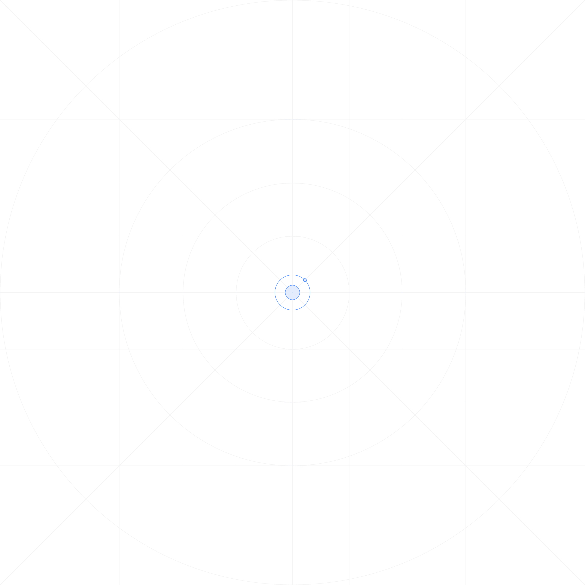

<ion-header>
  <ion-toolbar>
    <ion-title>
      News
    </ion-title>
  </ion-toolbar>
</ion-header>

<ion-content>
  <ion-card *ngFor="let article of data ?.articles" (click)="onGoToNewsSinglePages(article)">
    <ion-img [src]="article.urlToImage"></ion-img>
  
    <ion-card-content>
      <ion-card-title>{{article.title}}</ion-card-title>
    
      <p>{{article.description}}</p>
    </ion-card-content>
  </ion-card>
</ion-content>

<!-- <div id="custom-overlay" [style.display]="splash ? 'flex': 'none'">
  <div class="flb">
    <div class="Aligner-item Aligner-item--top"></div>
    
    <div class="Aligner-item Aligner-item--bottom"></div>
  </div>
</div> -->


<!-- <ion-content>
    <ion-card class="welcome-card">
      
      <ion-card-header>
        <ion-card-subtitle>Get Started</ion-card-subtitle>
        <ion-card-title>Welcome to Ionic</ion-card-title>
      </ion-card-header>
      <ion-card-content>
        <p>Now that your app has been created, you'll want to start building out features and components. Check out some of the resources below for next steps.</p>
      </ion-card-content>
    </ion-card>
    <ion-list lines="none">
      <ion-list-header>
        <ion-label>Resources</ion-label>
      </ion-list-header>
      <ion-item href="https://ionicframework.com/docs/">
        <ion-icon slot="start" color="medium" name="book"></ion-icon>
        <ion-label>Ionic Documentation</ion-label>
      </ion-item>
      <ion-item href="https://ionicframework.com/docs/building/scaffolding">
        <ion-icon slot="start" color="medium" name="build"></ion-icon>
        <ion-label>Scaffold Out Your App</ion-label>
      </ion-item>
      <ion-item href="https://ionicframework.com/docs/layout/structure">
        <ion-icon slot="start" color="medium" name="grid"></ion-icon>
        <ion-label>Change Your App Layout</ion-label>
      </ion-item>
      <ion-item href="https://ionicframework.com/docs/theming/basics">
        <ion-icon slot="start" color="medium" name="color-fill"></ion-icon>
        <ion-label>Theme Your App</ion-label>
      </ion-item>
    </ion-list>
</ion-content> -->
